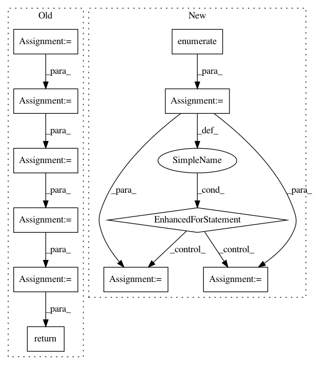

7f30b2403fadc4eaad48ceaf6154a626f477f8c8,autokeras/generator.py,DefaultClassifierGenerator,generate,#DefaultClassifierGenerator#Any#Any#,51
Before Change
pooling_len = int(model_len / 4)
output_tensor = input_tensor = Input(shape=self.input_shape)
for i in range(model_len):
output_tensor = BatchNormalization()(output_tensor)
output_tensor = Activation("relu")(output_tensor)
output_tensor = conv(model_width, kernel_size=self._get_shape(3), padding="same")(output_tensor)
output_tensor = Dropout(constant.CONV_DROPOUT_RATE)(output_tensor)
if (i + 1) % pooling_len == 0 and i != model_len - 1:
output_tensor = pool(padding="same")(output_tensor)
output_tensor = ave()(output_tensor)
output_tensor = Dense(self.n_classes, activation="softmax")(output_tensor)
return Model(inputs=input_tensor, outputs=output_tensor)
class RandomConvClassifierGenerator(ClassifierGenerator):
A classifier generator that generates random convolutional neural networks.
After Change
model.layers.append(StubGlobalPooling(ave))
model.layers.append(StubDense(self.n_classes, activation="softmax"))
model.outputs = [len(model.layers)]
for index, layer in enumerate(model.layers):
layer.input = index
layer.output = index + 1
return Graph(model, False)
class RandomConvClassifierGenerator(ClassifierGenerator):
In pattern: SUPERPATTERN
Frequency: 3
Non-data size: 11
Instances
Project Name: keras-team/autokeras
Commit Name: 7f30b2403fadc4eaad48ceaf6154a626f477f8c8
Time: 2018-05-26
Author: jin@tamu.edu
File Name: autokeras/generator.py
Class Name: DefaultClassifierGenerator
Method Name: generate
Project Name: keras-team/autokeras
Commit Name: 4b83c1070cebd0d996ba2cc69779dcb66d5d0032
Time: 2018-05-29
Author: jhfjhfj1@gmail.com
File Name: autokeras/generator.py
Class Name: DefaultClassifierGenerator
Method Name: generate
Project Name: NifTK/NiftyNet
Commit Name: 7d0004e4222df12583fa100974f9d55eee4b5743
Time: 2017-09-13
Author: wenqi.li@ucl.ac.uk
File Name: niftynet/network/simulator_gan.py
Class Name: ImageGenerator
Method Name: layer_op